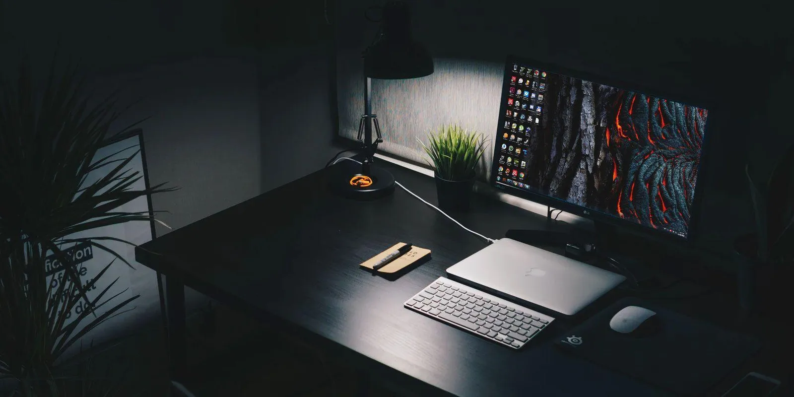

Ideas Are Cheap Until Shipped

The biggest line on my homepage says "Ideas are cheap until shipped." People sometimes ask if it is a quote from someone famous. It is not. It is just the sentence I kept repeating to myself until it became a rule.
Here is the uncomfortable truth I learned early: everyone I know has good ideas. The group chat has good ideas. The classroom has good ideas. The difference between an engineer and a person with opinions is not the quality of the idea. It is whether anything exists at the end that another human can open, click, and use.
Where vibe-ship came from
I built vibe-ship because I kept watching the same thing happen, to others and to myself. You finish something. It works on your machine. Then you hit the wall of Dockerfiles, CI pipelines, environment variables, and security checklists, and the project quietly dies one weekend at a time. The code was done. The shipping was not.
So I wrote a tool that automates the boring last mile: production Docker setup, CI/CD workflows, and a security audit, generated in one pass. It is not glamorous work. Nobody posts a screenshot of a well-configured pipeline. But it is exactly the part where most projects go to die, which made it exactly the part worth automating.
Publishing it taught me a second lesson. The moment real developers ran it on real repositories, I found problems I could never have imagined alone. Edge cases in monorepos. Package managers I had never touched. A shipped tool collects reality for you. An unshipped tool collects dust.
Shipping is a skill, not an event
I used to treat shipping as the finish line. Now I treat it as a muscle. Every project I finish makes the next one easier to finish, because the fear shrinks. You learn that version one can be small. You learn that "not ready yet" is usually a feeling, not a fact. You learn to cut scope without cutting the standard.
This does not mean shipping careless work. Moving fast without lowering the standard is one of the values I hold hardest. It means the standard applies to what you release, not to some imaginary complete version that never arrives.
If you are sitting on something right now that is 80 percent done, this post is your sign. The last 20 percent is not polish. It is the whole point. Ship it, then keep improving it.